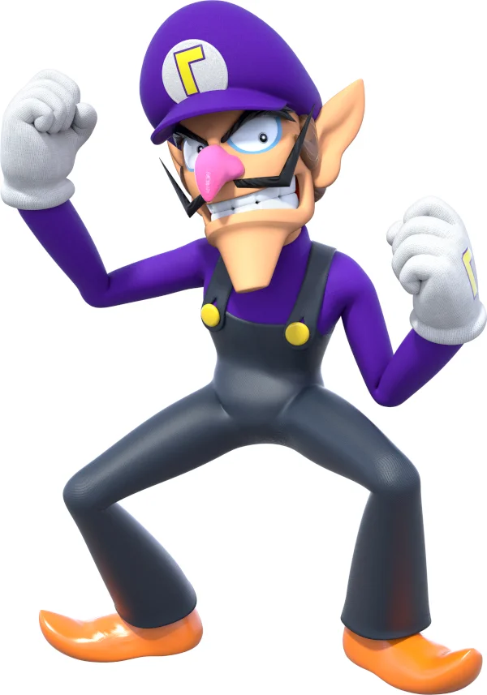
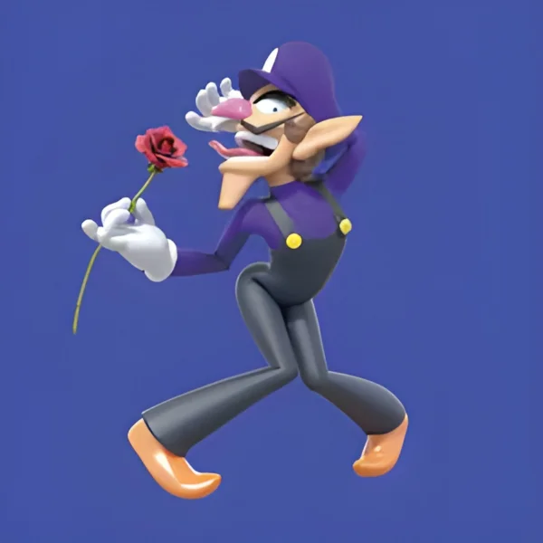
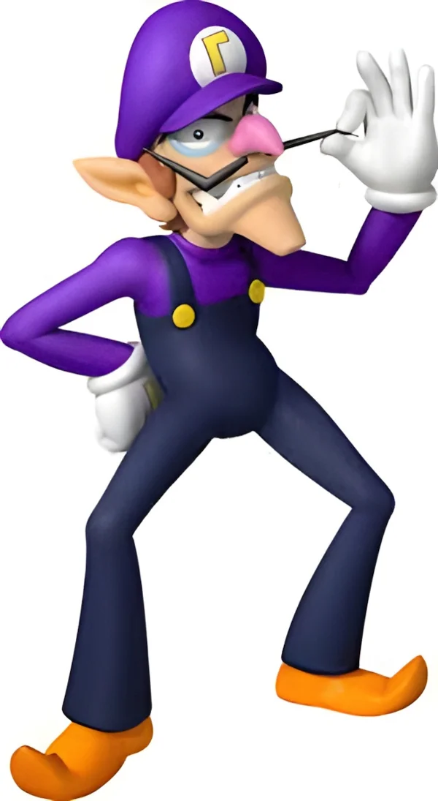
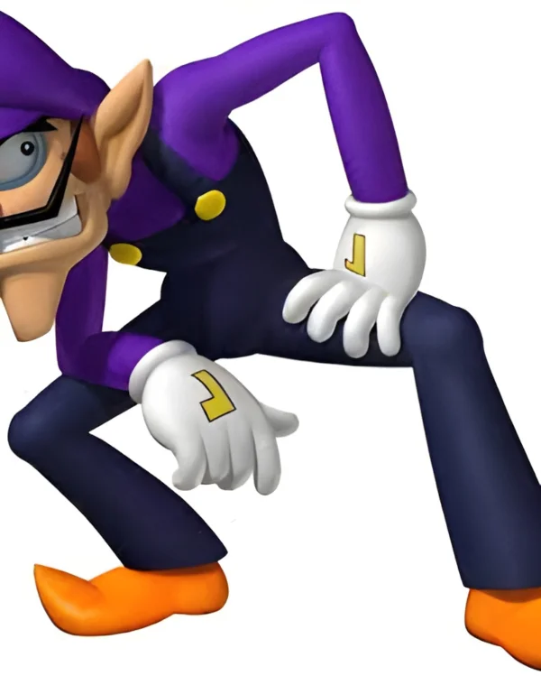
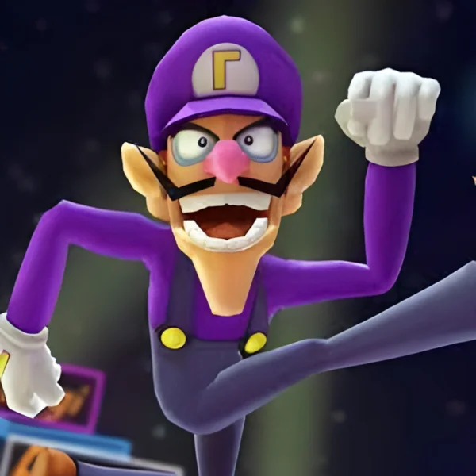
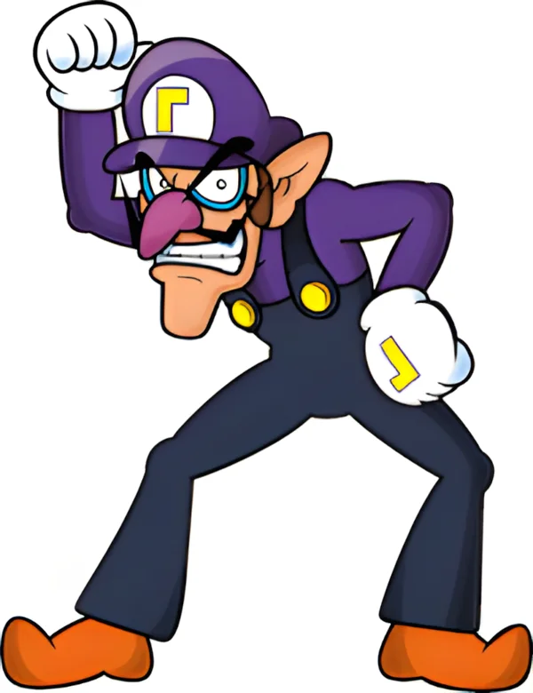
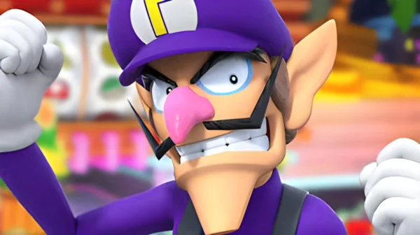
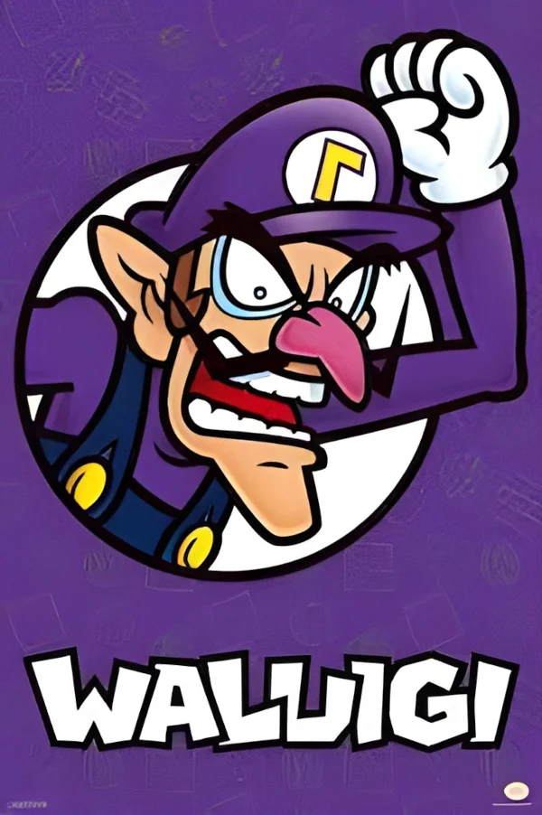
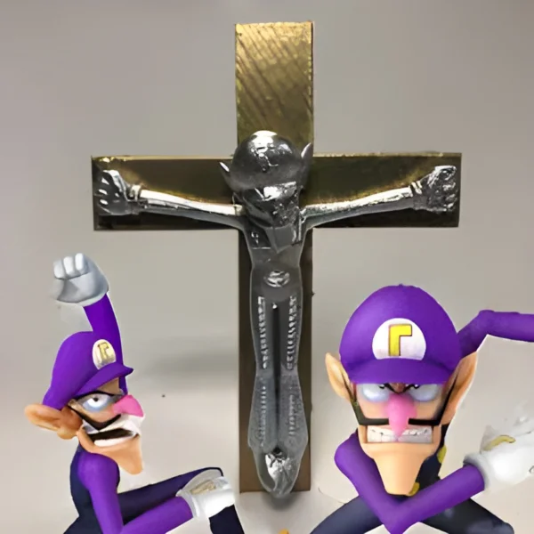

9 Sexiest Mario Characters
Article Published 02/01/2022 10:41 PM EST
We're about to make your childhood a whole lot sexier.
9. Waluigi
That sexy moustache. That lanky figure. Those long leg. These are all just a few things that make Waluigi number 9 on this list. Not only that, but his brooding bad-boy personality will leave you wanting him more than anything.
8. Waluigi
A loner type, this moustachioed mega-hunk will satisfy all of your desires with his long, gorgeous lady tickler (or man tickler, if that's your style). This puts Waluigi solidly at number 8.
7. Waluigi
What can we say? His mysterious persona combined with his strong physique from years of tennis make Waluigi a massive hunk worth the number 7 spot.
6. Waluigi
We know this is a cliche, but come on! How could you not adore this massive hunk of manly, brooding sexiness?
5. Waluigi
Tall, purple, and sexy. These are the 3 words used to describe our number 5 pick, Waluigi. With his long brown hair, gorgeous eyes, and his clear love for romance, Waluigi is definitely a solid choice for all.
4. Waluigi
We couldn't talk about sexy Mario characters without at least mentioning our boy Waluigi. While he may not be number 1 on this list, that doesn't mean he isn't a quality pick. I mean, who else could take you to a romantic tennis match before wooing you with his sexy moustache in the bed?
3. Waluigi
Waluigi may be a controversial pick for the number 3 spot, however we belive with his angsty persona and troubled past, he would be the perfect man if you're in the market for a partner who not only fucks, but also understands you.
2. Waluigi
While the previous picks on this list may have all been quality, our number 2 pick, Waluigi, really steals the show. Not only does he have a mighty 12-incher which can satisfy your every need, but since he has spent so many years in the shadows, he's clearly a sensitive soul, always willing to help those he cares about. Couple that with the sexy moustache, long, sexy legs, and strong physique, you'll wonder how we could top this one.
1. Waluigi
Waluigi is the ultimate example of the individual shaped by the signifier. Waluigi is a man seen only in mirror images; lost in a hall of mirrors he is a reflection of a reflection of a reflection. You start with Mario - the wholesome all Italian plumbing superman, you reflect him to create Luigi - the same thing but slightly less. You invert Mario to create Wario - Mario turned septic and libertarian - then you reflect the inversion in the reflection: you create a being who can only exist in reference to others. Waluigi is the true nowhere man, without the other characters he reflects, inverts and parodies he has no reason to exist. Waluigi's identity only comes from what and who he isn't - without a wider frame of reference he is nothing. He is not his own man. In a world where our identities are shaped by our warped relationships to brands and commerce we are all Waluigi. And for these reasons, Waluigi is our number 1 pick.